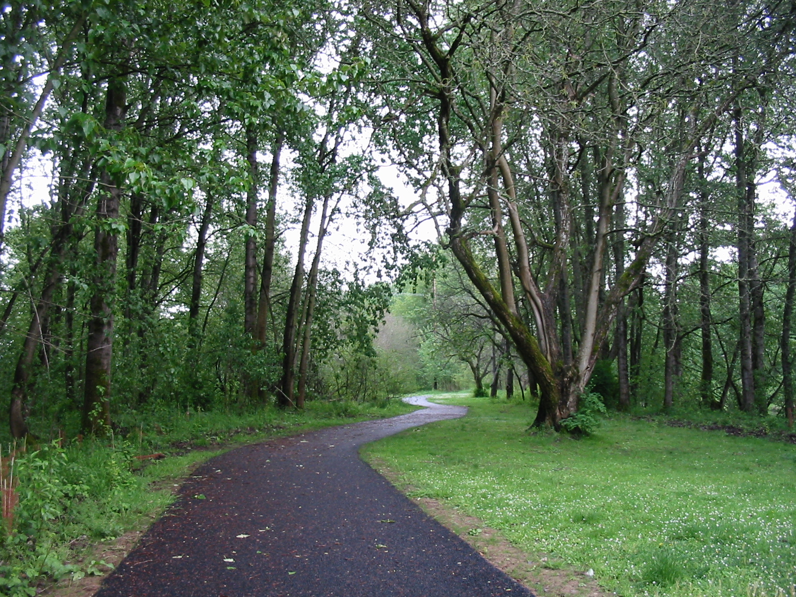

Kelley Point Park
The Willamette and Columbia Rivers meet at Kelley Point, and the park's rustling cottonwoods and sandy beaches form idyllic verges to the wide expanses of these two great rivers. Before European settlement, this area was a seasonally flooded sandbar, but the park area was built up by dredgings from the Port of Portland
Plan Your Trip
Trail Aspects:
- Exertion: Moderate, 1.7 Miles Round Trip
- Sights: Oldgrowth Forest, Alexandra (the exiled Dowager Governess of South Wood)
- Popularity: Moderate
- Open: All Year
Amenities:
- Bathrooms
- Bus Lines: 16, 4, MAX
Directions From Portland:
- Travel Time: Approximately 30 minutes (12.3 Miles from Portland)
- Get on I-405 N
- Take US-30 to N Philadelphia Ave.
- Take N Lombard St. to N Kelley Point Park Rd.
